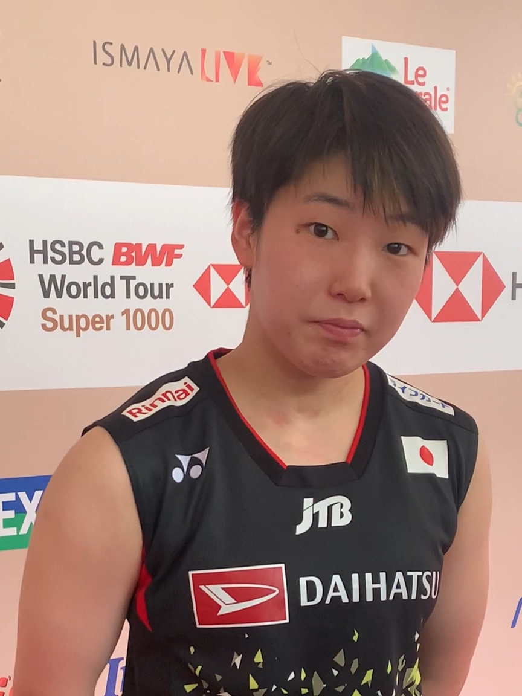

ラケット競技
•
バドミントン / 女子シングルス
やまぐち あかね
山口 茜
Akane Yamaguchi
🏢 所属: 再春館製薬所
🏅 世界選手権2連覇🏅 元世界ランキング1位🏅 全英オープン制覇
小柄な体を躍動させコートを縦横無尽に駆ける。変幻自在のショットで相手を翻弄するバドミントン界の至宝
経歴・これまでの歩み
3歳でバドミントンを始め、勝山高校在学中に世界ジュニアを連覇しヨネックスオープンジャパンを史上最年少の16歳で制覇。再春館製薬所入社後、2021年・2022年の世界選手権で女子シングルス連覇の偉業を達成。世界ランキング1位にも長期間君臨した。
主要大会ハイライト戦績
2024年
パリオリンピック
女子シングルス ベスト8
2022年
東京世界選手権
女子シングルス 金メダル（連覇）
2021年
ウエルバ世界選手権
女子シングルス 金メダル
プレイスタイル＆世界を制する武器
卓越した予測能力と跳躍力によるジャンピングスマッシュ、ネット際での繊細なヘアピン。相手の逆を突くトリックショットも多彩。
愛知・名古屋2026への決意とメッセージ
大会スケジュール＆観戦のツボ
🗓️ 出場予定日程・会場
2026年9月26日〜10月3日（一宮市総合体育館）
👀 観戦の注目ポイント
小柄さを感じさせないダイナミックなジャンプスマッシュと、相手の虚を突く絶妙なドロップショット。